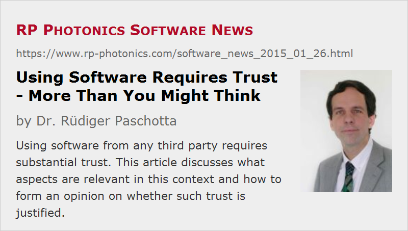

Using Software Requires Trust – More Than You Might Think
Posted on 2015-01-26 in the RP Photonics Software News (available as e-mail newsletter!)
Permanent link: https://www.rp-photonics.com/software_news_2015_01_26.html
Author: Dr. Rüdiger Paschotta, RP Photonics Consulting GmbH
Abstract: Using software from any third party requires substantial trust. This article discusses what aspects are relevant in this context and how to form an opinion on whether such trust is justified.

To some extent, everybody should be aware that using any third-party software is something which requires a certain amount of trust in the supplier of the software. I am not sure, however, whether many people are sufficiently aware of all important aspects – which is why I briefly discuss these in the following.
Does It Work?
At least if some software costs some significant amount of money, or if takes significant time to get familiar with it, you would like to be sure beforehand that it will really work – i.e., that it is fully suitable for the job. Often, it does not help much if some software is sufficient in the simpler cases but cannot be used for the (often more important) complicated cases. Imagine that you invest some amount of time and money in order to find out only then that you need a different product anyway, spending time and money once again …
If it comes to modeling software, the suitability for a certain job does not only depend on whether the kind of simulations required can be done in principle, but also whether it offers a practical solution. Some software products require you to fill all input data into certain forms – which may be nice to start, but can become extremely tedious if your problem requires more flexibility.
For example, consider a computer model for the regenerative amplifier, where the pulse needs to be injected, then circulated for some number of round trips, finally rejected and possibly subject to dispersive pulse compression. If you have to fiddle your pulses through such sequences manually, and then check the results for varying input parameters, such software may drive you nuts.
If you do nontrivial things, you absolutely need to some flexible automation features. I believe that the very best is to have a powerful script language, which allows you to perform any sequence of calculations and not a few predefined sets of them.
Will the Results be Reliable?
If the software puts out some results, they may or may not be correct. In case of complicated computer simulations, this may not be trivial to ensure or to check, and you will probably not be keen first to develop complicated testing procedures in order to build up trust step by step. So you want to software which has been properly validated.
Unfortunately, software validation is usually a highly non-trivial undertaking, and I'm afraid that many software developers neither have the expertise to do it nor even the discipline to spend sufficient time on it. So you will probably appreciate it very much if a supplier demonstrates the required capabilities and also the general will to produce products with a really high quality. In case of RP Photonics, you may e.g. have a look at an earlier blog article on software validation.
Note that validation is only the last step. For modeling software, it is vital that the developer is a person who fully understands all the involved physics. Anybody can claim to do that, but as a potential buyer you would like to see evidence. In our case, you may look up my CV or simply check the RP Photonics Encyclopedia which I have authored. And I tell you that it is me who develops every line of code in all software sold by RP Photonics, as far as it relates to the involved physics.
Will I Enjoy Working or Waste My Time?
Working with simulation software can be a real fun or lead you into despair – depending on the circumstances. Often, the problems to be investigated have some natural level of complexity, and you certainly don't want add more complexity with a deficient software user interface which forces you to work in an inefficient manner. Note that this is not only a question of having more or less fun, but also of reliability; after all, incorrect results from simulations often simply result from incorrect inputs, and the risk of errors in inputs is of course higher if the user interface is highly inconvenient.
In principle, forms can present a clear and easy way to enter and check input data. What however, if your inputs are spread over 10 or 20 different forms, where you may easily overlook what you want to check? Or what if you need to calculate some area of input values from a formula and transfer all the numbers into the form rather than just specifying the formula itself? A scripting approach can be superior also in this respect, beyond providing a far higher flexibility.
Will I Get Competent Technical Support?
Even if you are quite cute yourself, you may profit a lot from competent technical support, which should cover all aspects of using the software and ideally (as offered by RP Photonics) also include technical consultancy on the relevant technical and scientific area. There can be so many questions where such support can be vital, helping you correctly to efficiently do your work. Some examples:
- What is the best way of producing a diagram where certain calculations are performed and visualized?
- What is wrong with some produced code which does not bring the expected results?
- Is it a good idea to neglect a certain effect in a model?
- Why does a certain change in the inputs apparently degrade rather than improve the performance of the modeled device?
Before buying a piece of software (more precisely, a user license), you would probably like to know who will do the technical support. Can you trust that this will be a really competent person – ideally, the software developer himself or herself?
Will My Privacy Be Respected?
When you just communicate with the company, your privacy may already be at risk. You may, for example, get into some database which is shared with others, ensuring that you get flooded with advertisements from various other players. That, however, is quite harmless compared to what you risk when installing software from some source. After all, you may not be sure what exactly that software does on your computer:
- Will it check what other software products are installed on my computer and send that information to the supplier or some other party without telling me?
- Will it monitor my usage patterns and leak out corresponding data?
Although there are software tools (e.g. firewalls) to mitigate such risks somewhat, I believe there is no real solution; some amount of trust is indispensable. Of course, I do not say that you just have to trust – rather, you have to make up your mind concerning whom you trust.
Conclusion: Think About Whom You Trust!
It becomes pretty clear: before installing some piece of software on your computer, you should form an opinion concerning whether or not you can trust the corresponding supplier. That trust concerns both good intentions and capabilities. How much trust is needed does not only depend on how much money you are going to spend; after all, several of the discussed aspects do not depend on that.
I have worked over many years to deserve and build up the required trust – originally, in the context of technical consulting only, and soon after also concerning software. The fact that such business starts out slow and then substantially expands during many years may partly be due to the need to build up trust step by step. Certainly, I am very aware how important trust is, and that one can lose it much more quickly than one can build it up. This is just one of the reasons why I do my very best to deserve your trust, for example
- by working hard to deliver really helpful software support,
- by continuously further improving our simulation software (not only when major new versions are released, but also with updates), and
- by absolutely respecting the privacy of customers and anyone else (see our privacy statement).
I also tell you my main reason for working like that: it is the only way in which I can enjoy my work!
This article is a posting of the RP Photonics Software News, authored by Dr. Rüdiger Paschotta. You may link to this page, because its location is permanent.
Note that you can also receive the articles in the form of a newsletter or with an RSS feed.
|  |
If you like this article, share it with your friends and colleagues, e.g. via social media:
These sharing buttons are implemented in a privacy-friendly way!